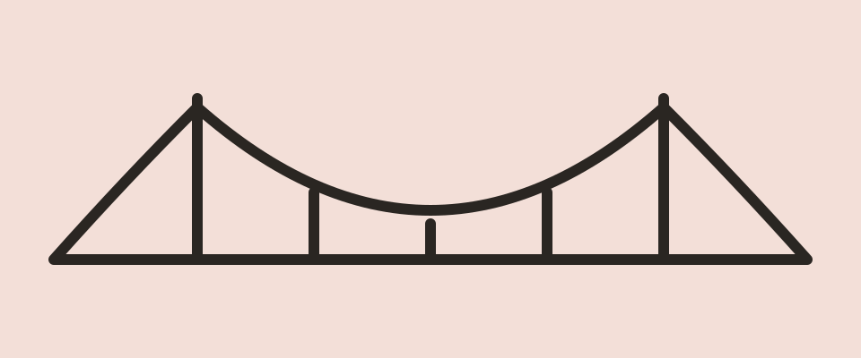

Bildliste
Stand 2026-11-19. Dieses Paket ist für den Moodle-Kurs gedacht (Kurs mit Anmeldung). Bilder aus dem Material der Lehrkraft stehen nicht im öffentlichen Netz.
| Bild | Wo | Herkunft und Status |
|---|---|---|
 | G · Grundlagen Startbildschirm und Deckblätter des Moduls | aus dem Material (Politik_Halbjahr_1, S. 11, Fall »Welches Recht schränken Sie ein?«); Urheber dort nicht genannt – noch offen |
 | M1 · Parteien und Wahlen Startbildschirm und Deckblätter des Moduls | aus dem Material (Politik_Halbjahr_1, S. 22); Urheber dort nicht genannt – noch offen |
 | KA · Klassenarbeit Startbildschirm und Deckblätter des Moduls | eigene Zeichnung |
 | M2 · Verbände und Lobbyismus Startbildschirm und Deckblätter des Moduls | eigene Zeichnung |
 | M3 · Medien Startbildschirm | aus dem Material (Politik_Halbjahr_1, S. 65, »Echokammern und Filterblasen«); Urheber dort nicht genannt – noch offen |
 | M4 · Deutschland und die EU Startbildschirm | aus dem Material (Politik_Halbjahr_1, S. 66, »Gewaltenteilung«); Urheber dort nicht genannt – noch offen |
 | M5 · Gefährdungen der Demokratie Startbildschirm | aus dem Material (Politik_Halbjahr_1, S. 49); im Bild: katapult-magazin.de |
 | B · Bilanz Startbildschirm | eigene Zeichnung |
 | G1 · Auftrag 1 | aus dem Material (Politik_Halbjahr_1, S. 2): Langhans/Prochnow, Demokratie und sozialer Rechtsstaat, Ernst Klett Verlag 2010, S. 4 – eingescannte Schulbuchseite, nur im Kurs mit Anmeldung (§ 60a UrhG) |
 | G1 · Auftrag 1 | aus dem Material (Politik_Halbjahr_1, S. 3): ebenda, S. 5; darin Herder Lexikon Politik, Freiburg 1992, S. 51 f. – eingescannte Schulbuchseite, nur im Kurs mit Anmeldung (§ 60a UrhG) |
 | G1 · Auftrag 3 | aus dem Material (Politik_Halbjahr_1, S. 5); führt zu einer Umfrage bei fobizz |
 | M1.1 (Film und Zusatzseite) | aus dem GK-Labor v18, eigene Zeichnung |